Efficient Swing Computation for Retrieval in Large-Scale Recommender Systems
大规模推荐系统中面向检索的高效 Swing 计算
作者： Runhao Jiang、Renchi Yang。机构： 香港浸会大学。来源与日期： arXiv 技术报告，2026-09-15 首次公开；阅读与核验日期为 2026-09-17。PDF 使用 SIGMOD ’27 模板并含占位 DOI，不能据此确认会议录用。论文： arXiv:2609.16850。代码： HKBU-LAGAS/K-ASC，本轮入口可访问，未在本机复现实验。
1. 背景和问题
现有 Swing 计算要么随物品度数呈二次增长而代价过高，要么依赖截断启发式牺牲结果质量，在十亿交互图上尤其难以使用。
这一问题来自论文摘要与引言。Swing 是一种基于用户共同交互结构的物品相似度，常用于多阶段推荐系统的候选召回，也可以成为物品图上的边权。它不需要先训练一个向量模型，而是直接利用用户与物品之间的交互关系：如果两个物品同时被多对用户共同消费，就获得相似度贡献。但每一对用户的贡献又按两人的全部共同物品数折减。因此，两个兴趣极其接近、共同浏览很多内容的用户，不会对每个共同物品组合无限重复贡献强证据；来自兴趣交集较小的用户对，反而具有较高的单对权重。这里的降权依赖用户对的交集，而不只是某个物品的流行度或某个用户的活跃度。
这使 Swing 与简单共现计数存在实际区别。共现计数主要关注有多少用户同时接触两个物品，Swing 进一步关心这些共同用户彼此有多相似。计算一个源物品的相关候选，需要枚举与源物品有连接的用户对，再求两名用户的历史交集，给交集中的其他物品累计贡献。热门物品的用户邻居很多，用户对数量近似平方增长；即使最终只取二十个候选，中间仍可能需要考察大量用户对以及它们各自的长历史。因此，最终输出小并不能自动保证计算轻量，这正是本文的优化对象。
工程中可以在源物品的邻居数上设上限，例如论文使用的截断基线最多留下六百名用户。这样确实限制了枚举量，但也改变了被计算的图结构。若不同邻居群体提供不同的相似物品，截断可能系统性遗漏长尾群体，而不只是给所有分数加上对称噪声。另一方面，随机抽取固定数量的用户对再重加权，虽然可以在适当条件下保持无偏，却存在样本重复、邻域求交昂贵和小查询上抽样管理开销超过精确枚举的问题。本文没有重新定义推荐目标，而是研究怎样更经济地近似原有 Swing，以及怎样把预算集中到前若干名的边界处。
作者先做了一组很有解释力的基线观察。对 Twitch 的热门查询，精确计算平均超过三点八秒，朴素蒙特卡洛也超过零点五秒；其中集合求交占了总时间的八成以上。在 MAG 上，求交占比约为一半。相反，对于其余低度数物品，精确方法可能平均不到一毫秒，抽样反而没有优势。这些数字来自论文的前置经验分析，当时使用原始求交实现，并且将随机算法调到前二十集合至少百分之九十九点九的精度；它们不能与后文全面使用 QFilter++ 的主实验直接混在一起比较。
由此形成两种互补的优化方向。一种减少需要真正执行求交的用户对次数：抽样中相同的用户对只求交一次，将出现次数合并。另一种保持用户对枚举，但降低每一对的操作成本：只抽取一名用户的部分物品用于寻找贡献目标，同时仍使用完整交集的大小计算权重。前一种对应 GNS，后一种对应 USS。ASC 根据源物品的邻居数、邻居平均历史长度和抽样预算，预估两条路径的代价，再选择其中较便宜的一条。这样的设计比为所有查询固定使用一个算法更符合推荐图的高度偏斜分布。
前若干名检索又提出了额外问题。假设一个候选明显排在前面，另一个明显远离截断边界，为了返回相同的前二十集合，通常不需要把两者的分数都算得极准。真正昂贵的是第二十名附近的一小组候选：它们之间的分差可能小于估计误差。K-ASC 因此先以较低预算获得略大的候选池，再根据估计均值和方差寻找边界候选，最后只精化这些物品。这个结构保留了 Swing 的评分语义，同时把优化目标从全体物品分数准确转向最终候选集合的质量。
阅读本文必须区分三个层次。第一层是估计出的 Swing 分数与精确分数是否接近；第二层是近似前若干名与精确 Swing 排名的集合重合率；第三层才是利用这些物品邻居为用户推荐时，能否召回测试交互。一个算法在第二层接近百分之百，并不意味着用户点击率、订单率或真实满意度接近百分之百。本文主实验大多测第二层，另有离线用户召回实验测第三层，但没有线上随机试验。因此，其核心证据是降低计算开销并保持某种离线检索质量，不能扩展为已经改善推荐业务收益。
此外，理论保证也分层。混合相对与加性误差针对单个候选分数；经过候选截断与启发式边界判断的 K-ASC，并不直接获得精确前若干名集合的整体正确性承诺。作者另给出更保守、成本更高的 C-KASC 来处理这一目标。把三者都概括成“有理论保证的快速精确召回”，会抹去论文中最需要理解的成本与保证差异。本文还有两处值得复核的原文细节：USS 抽样比例的不等号方向，以及示例与主公式的有序、无序用户对归一化。下面保留这些疑点，不替作者作未经确认的修正。
对于已有生产系统，这个研究问题还包含一个容易遗漏的约束：替换查询执行器时，应尽量保持输入图、平滑系数和分数含义一致。如果同时修改日志窗口、用户去重方式或边权定义，就无法判断结果差异来自近似计算还是业务口径变动。本文将图固定后研究执行效率，使算法比较更干净，但代价是没有覆盖交互持续流入时的全部状态维护问题。精确结果可作为小规模真值，也可用来检验热点和冷门查询的不同误差结构。因而最合适的使用方式是先把它看作一组可测量、可回退的近似算子，再逐步纳入召回系统；不应跳过语义一致性验证，只凭一条大图加速曲线决定替换线上实现。
2. 方法
2.1 Swing 定义与混合误差
符号解释： 令用户物品二部图为 $G=(U\cup I,E)$，$U(v)$ 表示物品的用户邻居，$I(u)$ 表示用户交互过的物品集合。源物品为 $v_q$，目标物品为 $v_t$，物品度数记为 $d(v_q)$，并令 $D(v_q)=\sum_{u\in U(v_q)}d(u)$。论文式一与精确算法可以写为：
其中，$u_i,u_j$ 为不同的共同用户，$α$ 为平滑项，$I(u)$ 为用户物品邻域。每个贡献由共同用户对支持，平滑项 $\alpha$ 避免分母过小，并控制共同历史长度的影响。对于不同源物品和目标物品，产生贡献的用户交集至少包含这两个物品，因此分数上界为 $d(v_q)(d(v_q)-1)/(\alpha+2)$。这里按主公式、算法一和蒙特卡洛归一化采用有序且不同的用户对，相应共有 $d(d-1)$ 个可能抽样结果。若实现只枚举无序对，则要一致处理成倍关系。原文图八的数值例子按每对一次相加，和有序定义存在口径疑点；本笔记解释该图的原始数值时会明确保留这一差别，不将两种计数随意混用。 论文不要求所有接近零的分数也具有很小的相对误差，而采用阈值 $\lambda$ 将两种区域拼接：
其中，$ε$ 为相对误差阈值，$λ$ 为切换到加性误差的分数阈值。当真实分数高于阈值，右侧随真实分数缩放；低于阈值时，容忍的误差固定为 $\epsilon\lambda$。这避免了对极小分数提出不现实的相对精度要求，同时对主要候选保持相对控制。概率参数 $\delta$ 则限定某个估计违反这一误差条件的概率。需要注意，这类逐物品概率陈述和全部物品同时正确是不同命题；若应用要求全候选联合保证，还需要明确处理多重比较和排名间隔。 底层的 QFilter++ 用分块稀疏位图表示邻接集合，并优化匹配、计数以及重排构建流程。对 USS 和候选精化而言，只求交集大小通常比完整物化交集更便宜，因为前者不用把所有成员逐个输出。论文报告大小计算平均约一点五倍、最高约三点六倍的改善，但这些是底层操作口径。前端算法仍要承担抽样、计数、候选维护等成本，不能直接把底层倍数乘到端到端加速上。整个方法属于图查询处理，没有神经网络训练阶段；主要离线工作是构图和辅助索引构建，查询阶段执行采样、求交、候选选择及可选精化。
2.2 GNS、USS 与自适应选择
GNS 沿用朴素蒙特卡洛的均匀用户对抽样，但是先把重复出现的用户对存入计数表 $S$，随后只对不同用户对求交。其样本量按论文式四设置：
其中 $\epsilon$ 的平方倒数主导精度变严时的成本增长，$\delta$ 只以对数形式影响预算，查询度数则决定一次抽样贡献的最坏幅度。对于出现 $S(u_i,u_j)$ 次的用户对，每个共同目标物品累计的贡献是 $S(u_i,u_j)d(v_q)(d(v_q)-1)/[n(\alpha+|I_i\cap I_j|)]$。重复次数乘回权重，因此分组只是重排计算，而不是丢弃重复样本。用户度数低于二时不可能为不同目标形成有效结构，可以预过滤，但实际代码中的抽样域与归一化度数必须保持一致。 USS 的思想相反：允许遍历所有有效用户对，却不物化每一对的完整交集。它从较小用户邻域抽取 $\lceil\gamma d(u_i)\rceil$ 个物品，使用另一用户的哈希集合做成员判断，只对命中的目标更新分数。完整交集大小仍被计算并进入分母。若实际抽样概率为 $p_i=|I'(u_i)|/d(u_i)$，命中后的贡献为 $1/[p_i(\alpha+|I_i\cap I_j|)]$；因为目标被抽中的概率也是 $p_i$，两者相抵后恢复原期望。这是无偏性的来源，不能把完整交集大小替换为抽样交集大小而仍声称同一保证。
其中，$\gamma$ 为物品子集抽样率，其他符号与样本量式相同。这正是原文式五的方向。原文存在待确认之处： 抽样比例越小，逆概率加权后的单次贡献通常越大；附录证明却从这个上界形式推导贡献随机变量的上界，方向上并不直观。正文又强调实际抽样率不小于 $\gamma$，以维持误差界。这里忠实呈现作者写法，将 USS 的误差定理标为作者主张；实施时应核对代码、推导与后续勘误，不能自行把不等号改成另一个方向后宣称已复现论文。无偏估计和集中界成立也应分开验证，前者的逆概率补偿解释不能消除后者的疑点。 ASC 用以下判据选择 USS，否则选择 GNS：
其中，这里 $\rho$ 是两种路径的基本操作经验耗时比例。左侧对应遍历用户对的成本，右侧对应抽样次数以及平均求交成本。理论分析证明的是在所建成本模型下选择两者的较小值，不是任何硬件和数据分布上都自动达到真实最优时延。正文给 ASC 常用值零点五；K-ASC 的实验配置使用零点八，不能把一个常数无条件复制到所有运行环境。
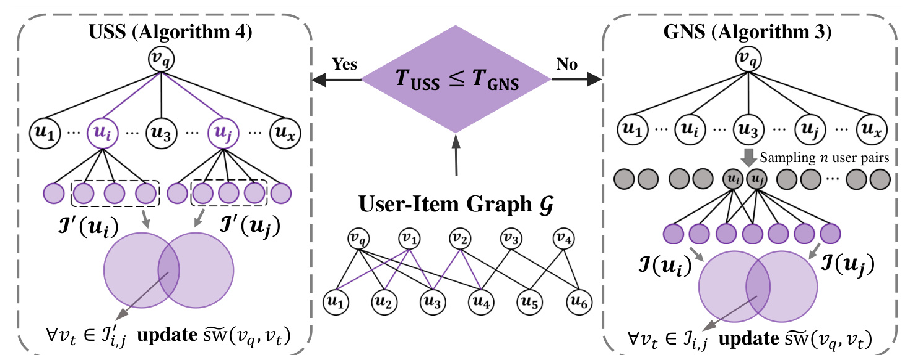
图四中间是输入的用户物品图，上方菱形比较预估代价，左边进入 USS，右边进入 GNS。左右两侧紫色集合都服务于同一个输出，即源物品对各目标物品的估计 Swing，但减少工作量的位置不同。右侧首先抽取用户对，灰色节点表示其余没有被选中的邻居，重复抽到的对会被合并计数；一旦需要计算某个用户对，就对它的完整共同物品更新贡献。左侧保留枚举用户对的思路，把交集物化缩减为小样本的成员检测，并用完整交集大小决定权重。图中的集合示意用于表达两种操作尺度，实际 USS 伪代码从较小一侧抽样后与另一侧完整集合比较，不能照图中两个带撇号的集合误实现成两边同时抽样而不补偿概率。这一图也说明为什么查询度数不是唯一判断依据。即便两个源物品连接相同数量的用户，它们邻居的历史长度不同，单对求交代价就不同；此外，严格误差阈值会放大所需抽样预算，使 GNS 的样本管理成本升高。ASC 把这些因素纳入选择，避免只用热门与非热门的二分类阈值。对于稀疏的小查询，枚举本身可很便宜；对热门查询，抽样与分组能大幅减少重活。两条路径共享同一个评分定义，但它们的缓存访问、哈希开销、位图求交和临时内存不同，因此复现时应测分支选择的后悔值：所选分支耗时与实际更快分支耗时之差，而不仅记录最后的平均加速倍数。还要注意，图中分支选择发生在执行昂贵求交之前，统计量获取必须足够便宜才有意义。若服务为了估计分支代价额外遍历全部大邻域，选择器自身就可能消耗预期节省。因此应预存查询度数与邻居度数和，并在图更新时核对这些统计量是否同步，而不是每次请求临时重建。
2.3 贪心候选生成
K-ASC 保留 ASC 的低成本分支选择。进入 GNS 路径时，它将总预算划分为 $n_f=\lceil\beta n\rceil$ 和 $n_r=n-n_f$，先用前者产生 $K+\kappa$ 个候选，再用后者精化边界集合。这里 $\kappa$ 是额外候选数，$\beta$ 决定先探索多少。候选阶段不只是维护均值，还维护方差，从而区分“估计分数接近但不确定性很小”和“当前名次看似明确但估计极不稳定”。
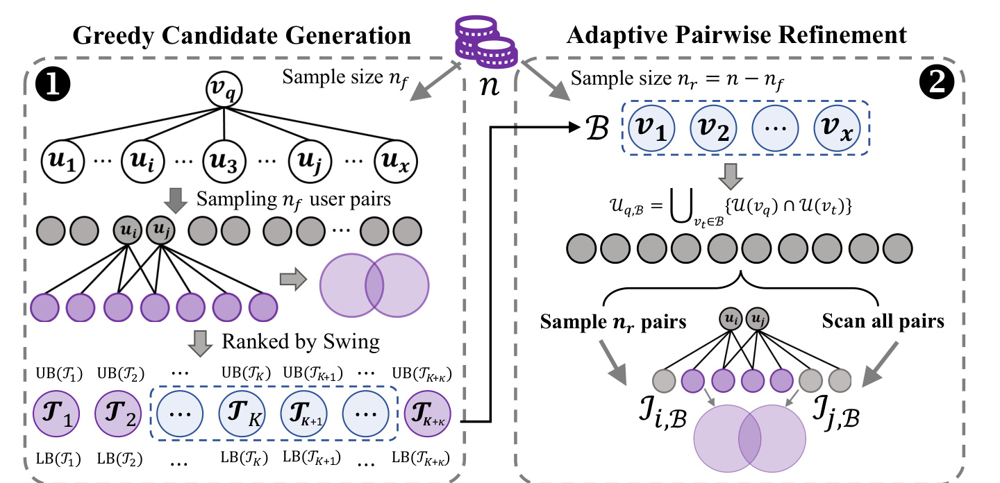
图六从顶部的总预算开始，左侧把少量样本变成一个稍大的排序列表。列表上下的界并不是新的相关性特征，而是当前估计的不确定区间。蓝色虚框将可能跨越第 $K$ 名边界的候选送往右侧；明显安全的头部项不再消耗同等规模的精化预算。右侧先找到同时与查询物品、边界候选相连的用户，再决定在较小空间内继续抽样还是直接扫描全部用户对。于是优化并非简单地“少算一点”，而是两级缩减：先缩减需要精确区分的目标物品，再缩减可能为这些物品贡献的用户。每一层仍依赖原始邻接信息，没有引入新的嵌入训练或学习到的排序器。 这张图需要连同其隐含风险一起理解。初始候选池只有 $K+\kappa$ 个，若某个真正重要的物品在低预算阶段被低估到候选池以外，后面的精化无法自动找回它。因此，固定多取几个候选是一种经验上有效的策略，而不是对任意图都充足的证书。预算划分也存在真实取舍：过小的 $\beta$ 让候选生成不稳，后段再精确也可能修不好遗漏；过大的 $\beta$ 把大量工作花在已明显分离的候选上，失去按边界集中计算的优势。论文用经验曲线支持这一设计，但保证版需要额外工作。工程接入时应同时记录候选池覆盖率、精化集合大小和最终集合重合率，三者对应不同失败环节，不能只看末端单一指标。 置信半径使用原文式九的经验 Bernstein 形式：若希望把这个过程接到原有批处理，图中的两个阶段可以共用图快照，但不能在初筛与精化之间悄悄切换交互版本，否则前段不确定区间与后段精确值并非针对同一个目标函数。
其中，$\sigma$ 是经验方差，$\zeta$ 是单次贡献上界。第一项让波动小的候选较快收紧，第二项保留由幅度上界带来的有限样本保护。相较只用一个固定误差宽度，逐候选方差能更具体地反映估计难度。本文符号 $\sigma$ 表示方差量而非标准差；复现时还应核对定理与在线更新中的分母约定，不应凭变量名再开平方。 为了不因分组而改变统计量，作者使用批量等值观测更新。设本轮某用户对出现 $c=S(u_i,u_j)$ 次，更新后的命中次数为 $r$，单次贡献是 $w=d(v_q)(d(v_q)-1)/(\alpha+|I_i\cap I_j|)$，旧均值为 $\mu$，令 $\Delta=w-\mu$，原文式十、十一可写为：
其中，$c$ 为该对的重复次数，$r$ 为更新后的命中总数，$\Delta$ 为当前贡献与旧均值的差。均值部分把同一个贡献重复 $c$ 次的作用一次加上；方差部分还要考虑旧均值与新观测之间的距离。完成命中观测更新后，算法补上其余抽样轮次的零贡献，并将均值乘以 $r/n_f$。如果漏掉这些零，估计对象将变成“在命中的条件下贡献多大”，不再是每轮抽样的无条件均值，排序与置信区间都会偏移。方差也必须同步修正，单独缩放均值并不充分。
其中，$UB$、$LB$ 分别为候选分数上界和下界，$n_f$ 是初筛样本数。这对应原文式十二。当前前 $K$ 内的物品若下界不高于第 $K+1$ 项的上界，就可能掉出去；额外候选若上界不低于第 $K$ 项的下界，就可能挤进来。两组不确定项组成边界集合。这个判断是候选内的局部筛选，不能据此宣称池外所有物品都已排除。
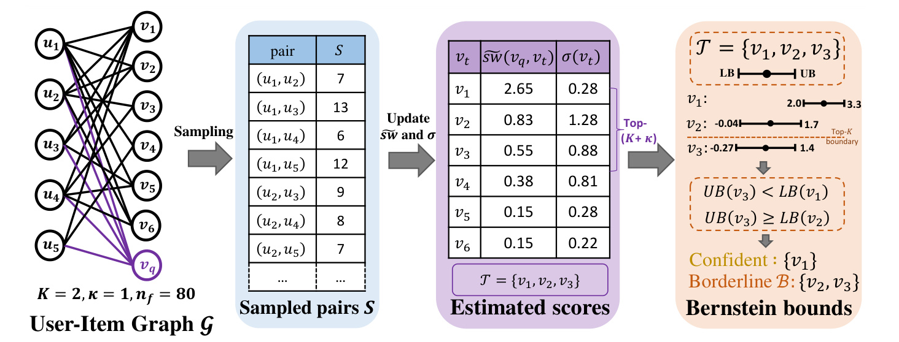
图七把统计更新落实到一个小图：目标取前两名，额外留一个候选，初始样本数为八十。分组表记录不同用户对的出现次数，随后得到六个候选的估计分数和方差。排在前三的物品分数为二点六五、零点八三、零点五五，但不能只凭均值差直接锁定前两名，因为第二、三项的不确定区间有明显重叠。第一项的区间为二点零至三点三，第三项上界一点四低于它的下界，因此在当前候选比较中较为安全；第二项区间从负零点零四到一点七，第三项从负零点二七到一点四，两者都需精化。区间下界为负并不表示 Swing 真值可以为负，而是对称集中界没有自动截断到非负支撑集。 这个示例强调的是不确定性驱动的预算分配，而不是对小图数值本身的普遍结论。同样的均值排序，如果来自更少的命中或更大幅度的单次贡献，方差和半径都会不同；如果两名候选的真实分数非常接近，即使增加样本也可能需要较长时间才能区分。分组只减少重复计算，不能凭空增加独立信息。另一方面，图中保留的候选只有三名，第四名之后被舍弃是初始均值筛选的结果，图本身没有给它们构造完整排除证据。因此，把图七用于实现检查时，应分别验证计数和零观测修正、上下界计算、边界标记三步，再构造一个池外真强项被低估的测试图，观察启发式路径的失败模式。图中第一项所谓确定，仅指当前构建的比较与置信范围下不需要进一步精化，不应改写为无条件确定。样本计数表里的省略号也说明图只展示部分用户对，无法仅凭可见行重新计算全部八十轮统计量；复现示例应从完整图和采样记录出发。
2.4 自适应精化与保证边界
边界集合 $B$ 给定后，只需关注 $U_{q,B}=\bigcup_{v\in B}(U(v_q)\cap U(v))$。算法八先比较剩余预算和查询度数，判断是否值得扫描源邻居以构造这个缩小的集合。如果预算太小，直接在原源邻居中抽样，再针对少量边界物品做成员检查，避免预过滤本身比抽样还贵。预算足够时，建立每名用户连接到哪些边界物品的紧凑表示；当集合很小时，可用一个整数位图加速后续求交。若缩小后的用户对总量不超过样本预算，直接精确枚举，否则在该集合中继续均匀抽样并使用对应域大小进行重加权。
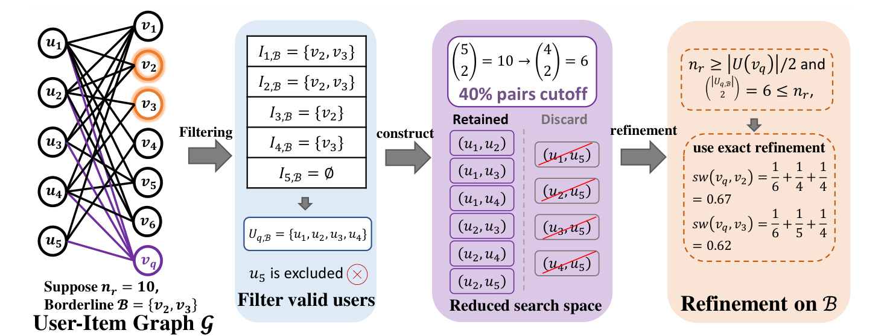
图八沿用边界物品为第二、第三项的小图，设剩余预算为十。第五名用户与这两个边界物品都不相连，因而被预过滤；其余四名用户分别保留与边界物品的连接关系。用户对的组合数量从五选二的十对变为四选二的六对，减少四成。因为六对已经不超过剩余预算，继续随机抽样反而没有必要，算法直接枚举精化。这展示了第二层自适应的作用：初始阶段因源物品较复杂而采用抽样，并不意味着后续在缩小空间中仍必须抽样。每一次选择都应针对当前实际搜索空间，不能把最初的分支选择沿用到所有阶段。 图中的原始示例写第二项分数为六分之一加四分之一加四分之一，约零点六七；第三项为六分之一加五分之一加四分之一，约零点六二。这里每个无序用户对仅计一次，而前面主定义与抽样归一化按有序对计数，数值量纲相差一个潜在因子二。这不改变同一约定下的排序，却会影响绝对阈值、误差界和不同路径之间的分数合并，因此必须在复现时逐项对齐。另外，图中保留列表仍出现涉及第五名用户的一行，与其被过滤的文字叙述不一致；应以算法八的集合定义理解筛选逻辑，不能把绘图条目直接当作可执行规范。这个发现不等于主算法必然无效，但足以说明示例校验不能省略，尤其在把多个估计器接到同一个召回服务时。这个例子还提示实现应把过滤后的用户集合和边界物品集合分别保存。前者改变抽样空间，后者改变需要输出分数的目标；它们缩小的幅度不同，不能拿候选数量直接替代用户对数量来设置权重或运行预算。
理论上，初筛只使用 $\beta n$ 个样本，作者为其陈述的是 $(\epsilon,\lambda/\beta)$ 混合误差；边界精化使用 $(1-\beta)n$ 个样本，对应 $(\epsilon,\lambda/(1-\beta))$。阈值被放大，说明拆预算后并非无成本保留原始全量精度。低度数路径仍调用 USS；高程度路径的不同物品接受不同精化程度。附录还提供 C-KASC，利用更保守的置信筛选和后续计算来保证前若干名结果，但成本明显升高。应把“分数近似保证”“经验候选集质量”“保证版本排名正确性”作为三个标签分别记录，尤其不能将普通 K-ASC 最快的时延与 C-KASC 更强的保证拼成同一个结论。
3. 实验结果
3.1 数据、机器与评价口径
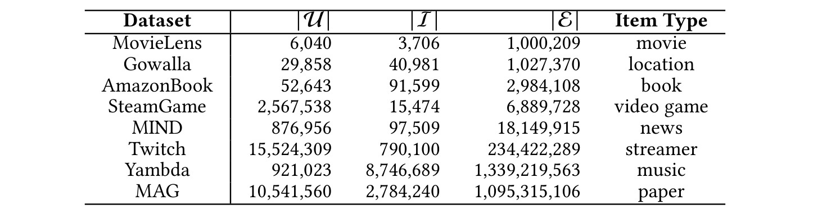
表二给出了用户数、物品数、边数和物品类型。八个数据集覆盖电影、签到、图书、游戏、新闻、直播、音乐和学术图。Yambda 有约十三点三九亿条边，MAG 有约十点九五亿条边，证明作者确实处理了十亿规模的邻接关系，而不是仅把小图结果外推到大图。但“用户”这一端的语义并不一致：学术二部图与用户真实消费行为不同，度数分布、重复兴趣和集合交叠方式也不同。因此跨图结果可以支持算法对不同稀疏结构的适用性，却不足以推断某个商业推荐场景上的点击效果。尤其不能只看总边数判断查询难度，单个物品的度数和其邻居历史长度更直接决定求交成本。
实现使用 C++、g++ 八点五与最高常用优化选项，在 AMD EPYC 7742、二点二五 GHz 的 Linux 单机上完成，机器配置一 TB 内存。一 TB 是机器配置，不等于算法实测占用一 TB；反过来，这也是单机内存环境下的实验，不能作为分片系统延迟证据。 查询集分两类：一千个从所有物品均匀抽取的随机查询，二百个从度数前百分之二十物品中抽取的热门查询。精确 Swing 排名作为真值，取二十、五十和一百三个列表长度。随机算法使用失败概率万分之一，并扫描多个相对误差参数；所有主实验方法共享 QFilter++，以避免仅由底层实现差异造成不公平比较。
主指标 Precision@K 的分母是精确结果集合大小，分子是精确和近似结果集合的交集。两边都是同样长度的列表时，它数值上就是集合重合率。另一个指标在近似返回的物品上计算分数相对误差的平均值，关注数值忠实度。二者不能互相替代：分数有一些误差但名次未变时，集合重合率可非常高；反之，边界上几乎同分的两项交换，集合指标可能下降但实际相关性差距很小。论文没有提供线上行为试验，因此本章涉及“质量”时都会明确它究竟指哪一种离线指标。
3.2 近似和 Top-K 查询
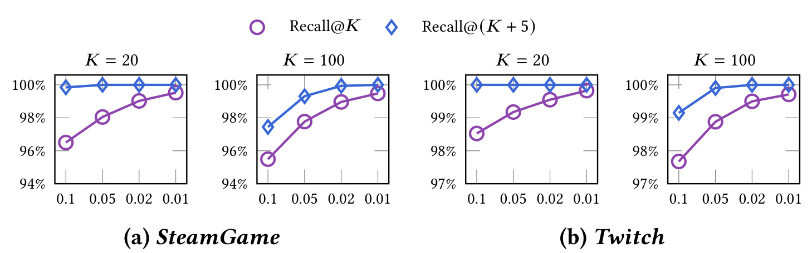
图五比较直接返回前若干项与多返回五项时，对精确目标集合的覆盖。横轴从较松误差走向较严误差，纵轴是候选覆盖率，四个面板对应两个数据集和两种列表长度。额外五项的曲线在较松误差时已较接近完整覆盖，说明初筛的大部分问题集中在排序截断附近，而不是所有高分候选都辨认不出。原文举例说，达到约百分之九十九点八覆盖时，前二十五项可使用零点一误差，直接取前二十项则需要零点零一误差；样本量近似按误差平方倒数变化，因此可能相差两个数量级。这个观察支撑过滤精化设计，但只有两个数据集上的经验曲线，不能被提升为“额外五个候选总是足够”的规则。多取五项的效益取决于真实排名边界附近的分数密度。若第十九至第三十名几乎同分，额外五个位置仍可能不够；若第二十名和第二十一名差距很大，直接初筛也许就能可靠区分。因此，这张图更适合指导按查询难度分配预算，而不是设置一个永久不变的候选池大小。两个数据集的纵轴下界也不同，视觉上同样高度的间距不能直接比较绝对损失。图里误差参数逐渐变小，代表更多计算，不是训练轮次或用户样本比例；横轴上从零点一到零点零一的变化虽然数值上只缩小十倍，但公式中的平方项使代价变化更大。严格说，这里验证的是候选覆盖与初筛预算的经验关系，最终排序还需要精化，因此应将这项实验与图十一的最终集合精度一起阅读。后续复现可以保持总预算固定，扫描额外候选数并统计被遗漏的精确前若干项的原始名次，看省下的初筛计算是否被新增精化成本抵消。
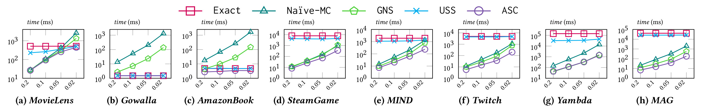
图九每个面板对应一个数据集，横轴是误差阈值，纵轴是对数尺度的毫秒时间。随着误差要求收紧，朴素抽样的时延迅速抬升，分组抽样缓和了重复求交却仍保留样本量增长趋势；USS 的曲线相对稳定，ASC 可以在不同区域转向更合适的分支。正文概括 ASC 相对 GNS 在热门查询中通常约有三倍改善，在大型 Yambda 和 MAG 的严格设置下相对 Exact 可达到最高约百倍。这个结果主要证明混合路径能避免单一估计器的坏区间，并不是说任何参数点都有相同加速。读取对数轴时也要注意，曲线间一个等距跨度通常意味着倍数变化，不能把图形高度差当作毫秒差。八个面板并非共用一个完全相同的纵轴范围，比较时首先应在同一数据集内部看方法之间的相对位置，再比较不同图的绝对耗时。精确方法不依赖误差参数，因而近似水平线提供一个自然的成本参照；若随机方法在最严参数下超过它，说明固定抽样可能已经失去意义。USS 的近似水平趋势则反映它仍遍历同一规模的用户对，收益主要来自常数降低，而非改变枚举阶数。对 MovieLens 这样的图，严格精度区间的优势可能较小；对 MAG，抽样组明显低于精确路径，提示热点结构而非总物品数决定收益。该图未画普通 K-ASC，是因为这里评价全分数混合误差查询，不能把下一组排名专用算法的时间直接插入同一保证口径。原文列出的最高百倍属于指定图和误差点，不能替代全部八图的平均结果。若要形成服务配置，应该从可接受误差出发选择时间点，而不是先选择最快点再忽略它对应的误差阈值。
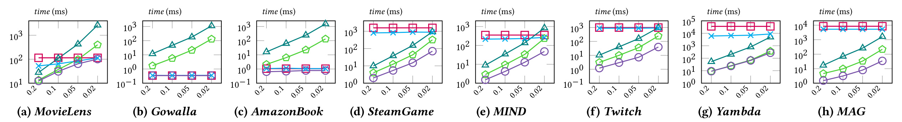
图十沿用图九的颜色与标记：红方块是精确计算，绿色多边形是 GNS，青色叉号是 USS，紫色圆点是 ASC，深青三角是朴素抽样。它覆盖随机源物品，低度数查询更多，因此精确路径及 USS 的竞争力更强。例如较小图上，ASC 会接近精确方法，而不是强行使用大量随机样本。正文给出的 ASC 相对 GNS 的典型改善约为五倍，高于热门查询中的约三倍。这并不矛盾：热门查询中减少用户对总量很重要，而随机查询中避免不必要抽样的收益同样可观。部署时应根据真实请求分布重新加权这两类曲线；均匀随机物品不等于线上按访问频次分布的请求负载。随机物品查询中还会包含度数很小乃至有效用户对很少的源物品，这些查询上抽样所需计数表和随机数开销占比会扩大。ASC 的价值不是让每个查询都以同样比例变快，而是避免把高成本分支施加到简单输入上。图中若干点几乎重叠，意味着在当前分辨率下无法精确读出微小差异，本笔记不据此编造额外百分比改善。与热门图比较时，也不能对八个面板做不加权平均：各数据集物品总量、活跃分布与请求语义不同。更接近真实服务的分析是先用线上源物品频率作为权重，再分别检查热点、普通和冷门请求的延迟分位数。如果极少热门查询占据大量计算，即便随机平均值很好，容量规划仍可能被尾部支配。图十说明选择器对异质查询有用，但没有覆盖缓存命中、线程竞争和请求排队；这些因素应在独立系统实验中补足，不应混入原文单次查询的解释。
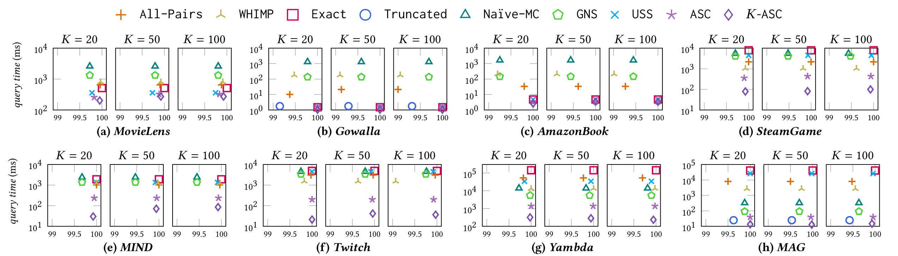
图十一把横轴改为与精确 Swing 列表的集合重合率，纵轴仍是对数毫秒时间，每个数据集进一步分成三种列表长度。K-ASC 的紫色菱形常位于接近完整重合的右侧且比其他方法更低，表示在该精度下更快。Yambda 上作者报告所有列表长度超过百分之九十九点九七，并相对 Exact 减少两个数量级以上时间；相对 ASC 又约快五倍。MAG 上相对 Exact 最多达到三个数量级，且较 ASC 约快两倍。这里的横轴主要聚焦百分之九十九到一百的窄区间，截断法有时很快但质量明显偏左，因此不能把最左边低质量点和最右边高质量点只按时延排序。图中的每个方法点对应作者调节参数后得到的精度与时间组合，并不是在同一随机种子下完全相同的输出。由于横轴被放大到接近完整精度的区间，微小水平差异仍可能代表每几千次查询中少量候选发生变化。是否可以接受这种变化，应结合边界项分数差和下游召回效果，而不只是看四舍五入到百分之百。热门查询来自度数前五分之一物品，但每个图只抽取二百个源，尚不能覆盖所有极端超级节点。尤其是 Yambda 的绝对时间仍可处于百毫秒量级，离常见在线召回预算可能有距离，适合离线构建还是请求时查询要分开评估。此外，图中截断法在某些面板的时间接近 K-ASC，但其精度损失方向更明显，提示截断和无偏抽样不是等价省算方式。论文给出跨方法权衡而非统一服务配置，使用时需固定可接受精度门槛再比较时延，才能避免挑不同质量点来放大加速。
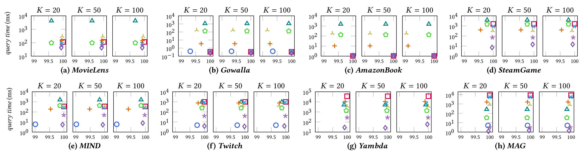
图十二沿用图十一的共享图例，展示随机查询下同一组方法的权衡。整体趋势仍支持 K-ASC，但绝对时间与热门查询不同，部分小图已经进入亚毫秒至毫秒区间，进一步改善未必能抵消真实系统中的网络和排队开销。All-Pairs 与 WHIMP 原本面向余弦相似度，在本文中经过候选生成接口改造，再用 Swing 给保留候选排序；它们不直接具有同样的混合误差保证。与它们比较有助于检验通用近似相似搜索是否足够适合 Swing，却不能等同于与完整商业向量检索服务的所有优化版本比较。作者还为大图候选评分使用自适应精化加速，因此复现时必须保留这项基线适配，避免把不必要的慢实现作为对手。在这张图里，紫色星号对应 ASC，紫色菱形对应 K-ASC；两者颜色接近，但语义不同。星号通常保留更广泛分数估计，菱形利用排名边界进一步压缩工作。若两者都位于最右侧，只能说明集合指标在显示精度下接近，不能说所有分数完全相等。对小图，其他方法的点也可能贴近右侧，这时需要从绝对时间、构建成本和实现复杂度判断是否值得引入新的查询器。对大图，通用相似度方法即便生成了不错的候选，也仍承担余弦过滤与后续 Swing 评分的组合开销，目标不匹配会削弱其优势。另一方面，本文只比较这些代表性基线，没有覆盖所有现代向量索引或工业图服务，所以结果支持的是所列方法集合内的优势。随机查询与热门查询使用不同样本，二图之间的差异不能当成同一查询从热门变冷后的因果效应；应使用度数分层的配对样本做更精细验证。
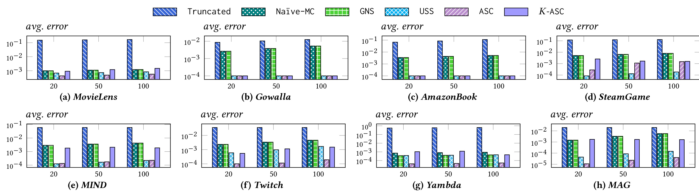
图十三补上分数层面的检查。截断法的误差通常较高，因为它改变了实际计算的用户集合；ASC 在多数面板上保留较小误差，而 K-ASC 为更高效率接受略大的数值偏差。这个差异符合设计目标：K-ASC 关心边界是否正确，而不要求所有返回项都达到与 ASC 完全相同的数值精度。在 Yambda 与 MAG 这类大图上，时间收益明显，分数误差仍相对有限，支持其作为原 Swing 的近似查询器。不过平均相对误差只在被返回的集合上测量，不会直接暴露那些根本没有进入候选池的真强项，也无法显示最坏个别查询。工程复核应增加分位数、失败查询样例和按度数分桶的误差，而不仅重复这张平均图。横轴的三个位置是最终列表长度，不是抽样预算，所以柱高随列表长度变化不能直接解释成算法越算越不准。返回更多物品会包含较低分或更接近边界的候选，指标的评价集合本身也在变化。各面板的纵轴最低值不同，接近底边的柱只表示落在相应显示区间，不能跨面板简单比较面积。截断法即使保留了部分高分邻居，也会少累计许多用户对贡献，因此数值偏差可能比集合偏差更明显。K-ASC 若用于只需候选集合的召回，这种有限偏差可能可以接受；如果下游把原始 Swing 分数作为排序特征或图传播权重，误差就会继续传导，必须重新校准而不是只验集合命中。这个应用差异使图十三成为必要补充：它提醒工程师先确认消费者究竟需要排名、绝对数值还是可比较的归一化权重，再决定用 ASC 或 K-ASC。未返回候选的误差、近零分母处理及极端值都没有被一个平均柱完全表达，仍需额外审查。
3.3 从物品集合一致性到真实交互召回
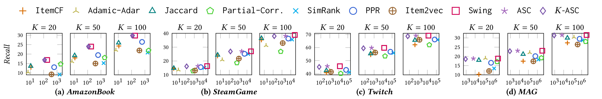
图十四的纵轴已经变成真实测试交互上的 Recall，不能与前面的集合 Precision 混为一谈。作者在 AmazonBook、SteamGame、Twitch 和 MAG 上把交互随机划分为八成训练、两成测试，随机抽取二百名测试用户，将每名用户的训练物品分别作为源物品发起查询。各源的分数向量先做一范数归一化，再使用最大值、均值或求和聚合，并采用表现较好的策略，过滤训练阶段已见物品后返回目标列表。横轴统计一名用户所有源物品的累计查询时间。因此它与单源物品查询的毫秒数口径不同，也包含用户历史长度的影响。聚合规则的选择也值得保留在结果解释中：当源物品分数先归一化时，不同相似度的尺度差异被部分抑制，但每种方法的长尾分布仍会改变聚合结果。最大池化突出一个强关联源，均值或求和则更强调多源共同支持，它们服务于不同兴趣结构。因此，该图不是对单个相似度公式的纯数学排名，而是对完整离线召回协议的比较。
这一实验的价值是确认“快速逼近 Swing”没有只在内部排名指标上好看。精确 Swing 相对 ItemCF、Adamic-Adar、Jaccard、部分相关、SimRank、PPR 和 Item2vec 具有竞争力，ASC 大体保留其用户召回，K-ASC 则进一步降低时间。正文最醒目的四千倍以上加速来自 MAG 上的这一用户召回设置，并保留精确 Swing 约百分之九十九的召回。这里“保留百分之九十九”是相对原召回水平，不是绝对 Recall 达到百分之九十九。图中 MAG 的绝对召回大致处于十几个到三十几个百分点区间，具体点值不从图中强行精读；最大倍数也不能推广到另外三张图或线上服务。
这组实验仍有边界。随机拆分交互可能让训练与测试的时间关系不同于真实未来推荐；二百名用户的评估规模有限；选择最佳聚合策略会影响方法间的比较，需要明确使用验证集而非测试集调参。对 MAG 这种学术二部图，召回的业务含义也不同于音乐或商品消费。因而它足以说明算法近似可以保留一项离线行为指标，却不能排除时间漂移、候选覆盖偏差、冷启动和实时过滤带来的变化。本文没有提供推荐收益置信区间或线上实验结果，不宜将图十四写成业务收益提升证据。
3.4 组件、参数与强保证的成本
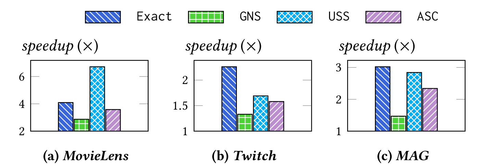
图十五比较引入 QFilter++ 前后的运行速度，基线已经使用经过优化的 Ankerl 哈希表，而非最简单的标准库实现。不同算法获益不同，因为 USS 更依赖交集大小计算，GNS 还包含抽样与计数开销。图中 MovieLens 的若干柱较高，MAG 的 ASC 改善约为二点三倍；不能将正文的该数字解读成所有算法在 MAG 的最高柱。底层位图与缓存访问优化说明数据结构仍然决定近似算法的实际效率，但主实验让各方法都共享 QFilter++，因此 ASC 与 K-ASC 相对其他主基线的优势不能全部归因于“只给自己的方法换了更快求交”。复现时应保留这种共享优化的公平性。三个面板覆盖不同的图结构，柱子之间的差别说明同一种数据结构优化不能脱离算法调用模式讨论。精确方法会大量物化共同邻居，USS 主要依赖大小与少量成员检测，GNS 还可能因为重复对分组而减少实际调用次数，最终暴露给求交内核的负载并不相同。因此，看到某个方法底层加速较小，未必说明内核效率差，也可能是它已经把该部分工作消掉，余下时间由别的操作主导。图中显示的是相对无该组件实现的倍数，而不是与完全未经优化代码的差距；这使结果更接近真实工程的边际收益。进一步复现时可记录集合长度比、交集大小、位图块数和缓存未命中，用这些变量解释哪些查询从大小专用路径获益。若图高度动态，还要把维护重排与位图的代价扣回总收益，避免以静态查询微基准推断持续更新环境下也有相同端到端优势。只有核对完整调用链，才能把局部收益转化为可信的整体收益。
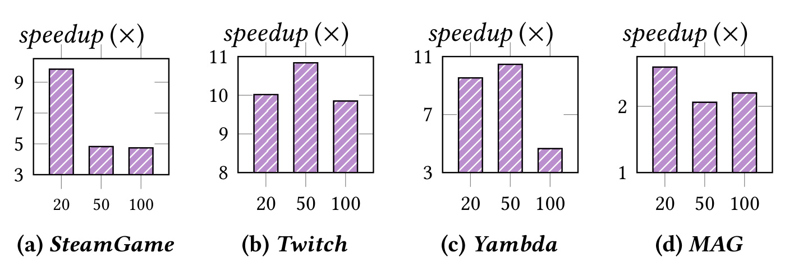
图十六比较有无算法八的速度，覆盖 SteamGame、Twitch、Yambda 和 MAG 的三种列表长度。Twitch 与 Yambda 在部分设置中出现约十倍改善，MAG 则更接近两倍量级，说明缩小边界用户空间的价值取决于图结构与边界集合的组成。列表长度增大时，并非所有数据集的收益都单调变化：更多候选可能扩大需要处理的用户范围，也可能改变精确枚举与随机抽样的分支选择。因此不能把精化收益简单写成一个固定系数。更有用的诊断是同时记录边界项数量、相关用户保留比例以及实际执行分支，再判断减时来自候选缩减还是内部求交常数改善。算法八消融尤其需要区分候选生成是否保持相同。如果去掉精化后同时改变初筛样本量，就无法只将差异归因于精化模块；本文图的解读应以其所述组件比较为准，不扩展出未给出的因果拆分。四组数据的列长也表明，精化节省并不只由候选数决定：边界物品的共同用户如果高度重合，过滤后空间仍可能很大；如果它们连接稀疏且分散，则少量成员检查便可排除大量对。MAG 上收益低于另两图，提示前端 ASC 或图本身已经减少了较多工作，进一步收缩的余地有限。部署观察中最好增加算法八选择精确分支的比例，因为剩余预算足够覆盖缩小空间时，精确精化既节省重复抽样又消除这一阶段的随机误差。图中倍数说明这个分支组合在所测数据上有价值，但没有提供每个分支的独立频率，不应凭柱高推断全部查询都走同一条路径。
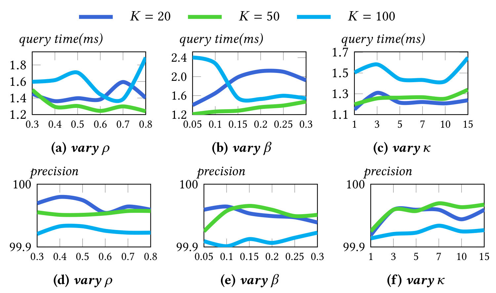
图十七上排分别改变代价比例、初筛预算占比和额外候选数，下排给出对应集合精度。代价比例的影响较小，初筛预算占比则存在更明显的列表长度依赖：较短列表可用更小的初筛份额，而较长列表通常需要更多预算以稳定识别边界。额外候选超过少量后，收益趋于有限，但也没有完全零成本。需要特别指出，正文对该图写有“约零点二毫秒”的概括，而图中纵轴实际约为一点二至二点四毫秒；这是原文内部不一致，本笔记以图轴展示为准并保留疑点，不把零点二毫秒当作可靠部署时延。附录提供跨数据集扫描及最优参数表，说明最佳误差与预算比例仍会随图、查询类别和列表长度变化。下排纵轴仅从百分之九十九点九到一百，因此曲线看起来有明显起伏，却仍位于很高的一致性区间；如果只看图形斜率，容易高估参数对绝对质量的影响。与此同时，上排的毫秒波动对严格时延预算仍可能重要，尤其在大量并发时。额外候选数的曲线趋缓表明此图上少量冗余候选已经覆盖主要边界不确定性，但它不证明所有图都具有同样边界分差。论文附录把代价比例固定为可迁移默认值，又对误差和初筛份额做网格搜索，这意味着“参数鲁棒”只是对部分参数的经验陈述，不应写成完全免调参。跟进时应保留默认配置和逐数据集最优配置两组结果，报告质量差异与调参成本，并用时间外测试检验参数是否会随图演化漂移。对于图文时间不一致，只能等待作者确认，既不能默认为图错，也不能取更小的文字数字作为宣传结果。
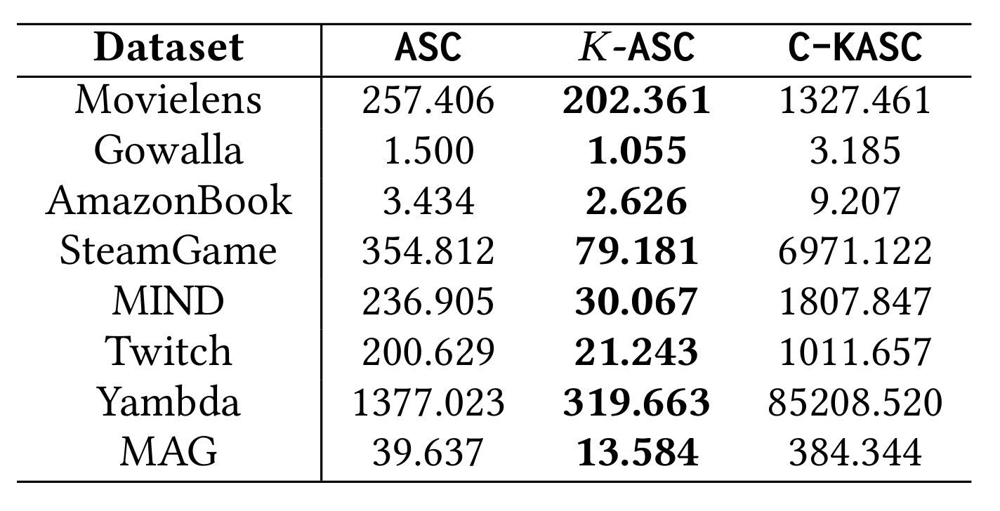
表三直接呈现保证强度的代价。热门前二十查询中，Yambda 的 ASC、K-ASC 和 C-KASC 分别为一千三百七十七点零二三、三百一十九点六六三和八万五千二百零八点五二零毫秒；MAG 分别为三十九点六三七、十三点五八四和三百八十四点三四四毫秒。SteamGame 的保证版也远慢于普通版本。它说明更保守的排名证书不是免费附加标签，启发式路径的高速度不能与保证版的结论互相借用。表中 K-ASC 相对 ASC 的加速也随数据集而变，小图可能只有有限改善，热门大图仍可能是百毫秒甚至更高；是否满足服务目标必须按自身延迟预算判断。表中的时间单位统一为毫秒，跨行对比时尤其要防止把八万多毫秒读成八十多毫秒。保证版在 Yambda 的时间相当于几十秒，而普通 K-ASC 是几百毫秒，两者服务的保证目标不同。即使精确前若干名在一些应用中值得这种成本，也应明确它是不是离线审计、真值生成或低频高价值查询，而不是默认把强保证放到每个在线请求上。该表没有同时列出所有方法的精度列，因此应结合前面的保证定义与实验设置理解，不能只看粗体最快值。小图中保证版也更慢，但差距远小于某些大图，表明代价取决于候选区间重叠与图结构。若实践只需要少量排序特征稳定，可以先检验普通版本的误差分位数；若业务必须保留严格结果证书，则应在预算中完整计入保证版的后续扫描。选择算法时应先声明保证需求，再选择相应时间数据，而不是先选择最快实现后附上最强标签。
3.5 预处理、动态空间与完整内存
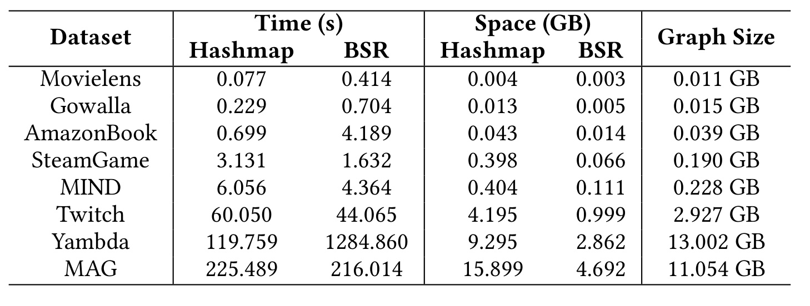
表六将一次性准备成本单独列出，避免只看查询时延而遗漏部署成本。Yambda 的 BSR 构建约一千二百八十四点八六秒，哈希表约一百一十九点七六秒；对应附加空间分别约二点八六二 GB 和九点二九五 GB。MAG 的 BSR 构建约二百一十六秒、空间四点六九二 GB，说明成本与边数并非简单线性对应，编号重排和局部结构也会影响表现。对于需要大量重复查询的静态或缓慢变化图，这些工作可以摊销；如果图更新频繁、全量重建窗口很短，则需单独核对增量维护开销。附录虽给出动态边插删微基准和分片部署讨论，但没有提供真实线上分布式负载测试。表中图大小和附加空间分列，可以看到哈希表空间在部分图上超过原图存储，说明常数级成员检测的便利有明显内存成本。BSR 较紧凑，却可能需要更复杂的预处理，这是一种时间与常驻空间交换，不是所有维度同时改善。Yambda 的构建时间明显高于 MAG，即使两者都为十亿边量级，进一步说明邻域分布和编号组织会影响重排效果。若每天或每小时重建一次，需要把构建持续时间与允许的数据滞后一起考虑；若采用增量维护，则需要验证编号与分块方案能否避免频繁大范围移动。本文还保留了原图与重排图，方便不同查询步骤使用，这会影响后续总内存表，不能仅将 BSR 这一列视为完整索引预算。另一方面，离线预处理并非完全损失：如果同一图要支持大量查询，均摊到每次请求后可以很小。合理评价应明确查询总数与图更新周期，用它们计算摊销后的总成本。
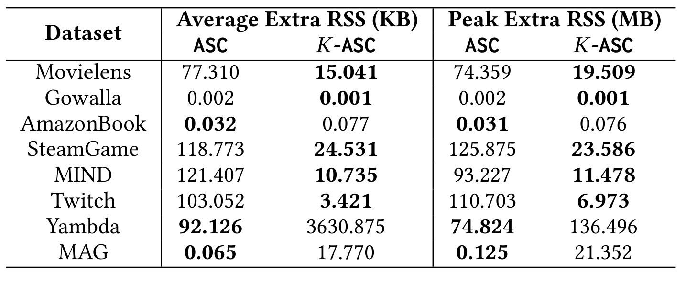
表七最容易误读的是单位：平均额外驻留内存以 KB 计，峰值额外驻留内存以 MB 计。K-ASC 在若干数据集减少临时内存，因为待维护样本对和候选更少；但 Yambda 与 MAG 的额外内存反而更高，统计方差、命中计数和候选队列可以抵消采样节省。例如 Yambda 的 K-ASC 峰值额外内存约一百三十六点五 MB，高于 ASC 的约七十四点八 MB。这个反例很重要，它阻止把“更快”自动改写成“所有资源都更省”。在并发查询场景，即使单次额外空间不大，仍需乘上真实并发和缓存占用，并考虑分配释放的尾延迟。表中平均额外驻留量与峰值额外驻留量的差距还说明，不同查询需要的临时结构规模变化很大。一个较小的平均数不能保证无突发分配压力；在高并发下，多个大邻域查询同时到达时，峰值可能与平均估计差很远。反过来，单次峰值简单乘以最大并发也可能过于保守，实际容量规划需要真实请求联合分布。作者给出的额外空间主要用于算法之间的比较，没有包含完整服务框架、线程栈、日志缓冲或跨机请求缓存。这里也不应把驻留内存直接等同于算法理论空间复杂度，因为分配器重用和页面驻留策略会影响实测值。对 K-ASC 而言，新增的统计量和小堆通常很轻，但在大量候选或命中稀疏时仍可能累计，这与 Yambda 和 MAG 的反例一致。若想降低临时空间，应先定位是分组表、候选统计还是精化用户集合主导，再决定流式更新或复用缓存，不能根据“候选只有几十个”就假设所有中间状态都很小。
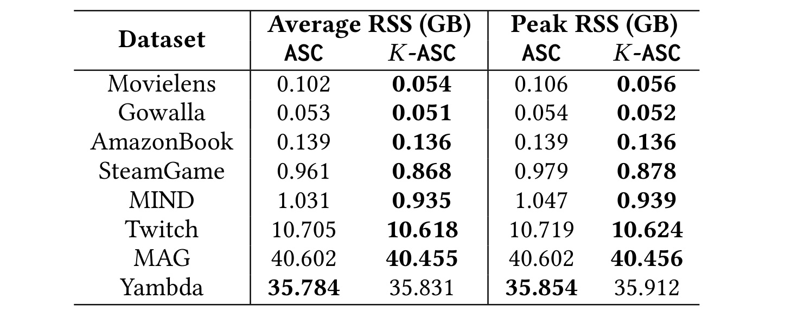
表八给出更接近容量规划的总驻留内存。MAG 的 K-ASC 平均约四十点四五五 GB、峰值约四十点四五六 GB；Yambda 的平均约三十五点八三一 GB、峰值约三十五点九一二 GB。这些值远低于机器配置的一 TB，但也明显高于只看“额外查询内存”时的印象。作者为实现方便同时保存原图、重排图、哈希表与 BSR，因此图和常驻索引主导总量，减少单次样本不一定带来总内存的大幅下降。对于部署决策，应该分别预算常驻结构、增量重建期间双份结构以及并发临时空间；本文表格只测量其具体单机实现，不意味着在相同边数下任何数据编码都具有同样占用。两种算法在 MAG 的平均总量只相差很小一部分，而在 Yambda 上 K-ASC 略高，这与表七所示的临时空间变化方向相符，但总体仍由常驻图主导。也就是说，降低查询时间不一定带来服务器数量按同样倍数下降：若服务受内存容量而非 CPU 限制，速度提升只能增加每台机器可承载的查询量，不能自动缩减图分片数。作者讨论按用户对拆分计算时，部分贡献可以相加后全局取前若干名；但分片复制和热点邻接缓存可能进一步增加系统总内存。表八没有测这些因素，不能直接拿四十 GB 乘一个简单系数作为多机规划。更稳妥的复现实验应先确认内存统计时点、是否已完成预热、是否保留构建临时数据，再逐步加入并发和增量更新。对资源紧张设备，还可以研究只保留一种邻接表示的权衡，但那会改变原实现的访问路径和时延，应作为新实验单独报告。
综合这些证据，论文最稳固的实验结论是：在八个图、两类物品查询和固定实现环境下，自适应路径与边界精化能明显改善“保持原 Swing 质量”的计算效率；用户召回实验进一步显示这种近似在四个离线数据集上大体保留原有检索效果。结论最不稳固的部分则是跨机器时延、分片通信、持续增量更新以及线上收益。对于理论实现一致性，式五方向、图八计数约定和图十七时间文字都应进入复现记录，不能被大量漂亮速度曲线掩盖。
4. 总结
本文值得保留的机制是把两个层面的适应性放在一起。ASC 根据源物品的实际邻域结构选择减少用户对次数还是减少每对求交代价；K-ASC 根据候选排序的不确定性决定把预算继续花在哪里。两者都围绕同一个既有相似度工作，因此更像一个可替换的图查询执行器，而非新的推荐建模范式。对已经使用 Swing 构建召回索引或物品图的团队，这种兼容原有评分语义的优化更容易建立可比基线：先固定图快照和精确定义，再比较不同执行路径的集合质量、数值误差和资源开销。
迁移到推荐工程时，可以从离线物品图构建、热点物品增量重算以及较小候选范围的按需查询分别验证。三个场景的收益不同：离线任务看总构建时间，在线查询看分位延迟，增量路径还要看索引维护和数据新鲜度。对大模型系统的启发更间接：RAG 或个性化记忆检索中，也可以先低成本产生稍大的候选集合，再对边界项执行昂贵评分，但前提是能构造可校准的不确定估计。本文没有研究语义相似度、模型生成概率或代理工具选择，不能将 Swing 的误差定理直接移植到这些任务。
需要同时保留四类限制。首先，评分近似与真实用户偏好之间隔着整个推荐评估链，集合一致性不能替代点击和长期体验。其次，主要结果来自单机 CPU 环境，分片部署虽能按用户对累加分解，却可能引入远程邻接拉取、热点和全局合并开销。再次，普通 K-ASC 的候选截断与边界规则依赖经验，C-KASC 的显著成本说明更强保证需要明确付费。最后，原文存在抽样率方向、示例计数和图文时延不一致，复现者应寻求作者澄清，而不是在代码中悄悄选择一种解释后把全部理论和速度结果都视为已经确认。
后续工作可以按三个具体步骤推进。第一，在小图上同时实现有序精确枚举、无序枚举和抽样估计，核对常数因子、去除无效用户后的采样域、零贡献修正以及多个估计路径合并时的量纲。第二，在固定快照中按源度数、用户历史长度、边界分差分桶，测候选池覆盖率、集合精度、误差分位数和尾延迟，检查最差查询是否集中在分数密集的边界。第三，把查询节省与索引构建、内存、图更新一起记账，并在时间切分的数据上做离线召回；只有这些指标稳定，再考虑独立的线上试验。这样的复现路线既能检验算法贡献，也能尽早发现论文未覆盖的服务约束。
复现结果还应保留随机种子和各次重复的分布；仅报告最佳运行一次会掩盖抽样与内存状态造成的波动，也不利于判断相同精度点是否稳定可达。
最终判断是，本文为大图 Swing 提供了结构清楚且有实验证据支持的加速组合，其中“先粗排、只精化边界”比单一最大加速数字更值得复用。最高四千倍只属于特定 MAG 用户召回设定，不能代表普遍线上倍率；近乎完整的集合重合也不等于完整排名证书。将这些边界与实现疑点明确记录后，论文依然具有很强的工程研究价值，尤其适合关注高阶共现召回、稀疏图查询和有预算的近似计算的读者。